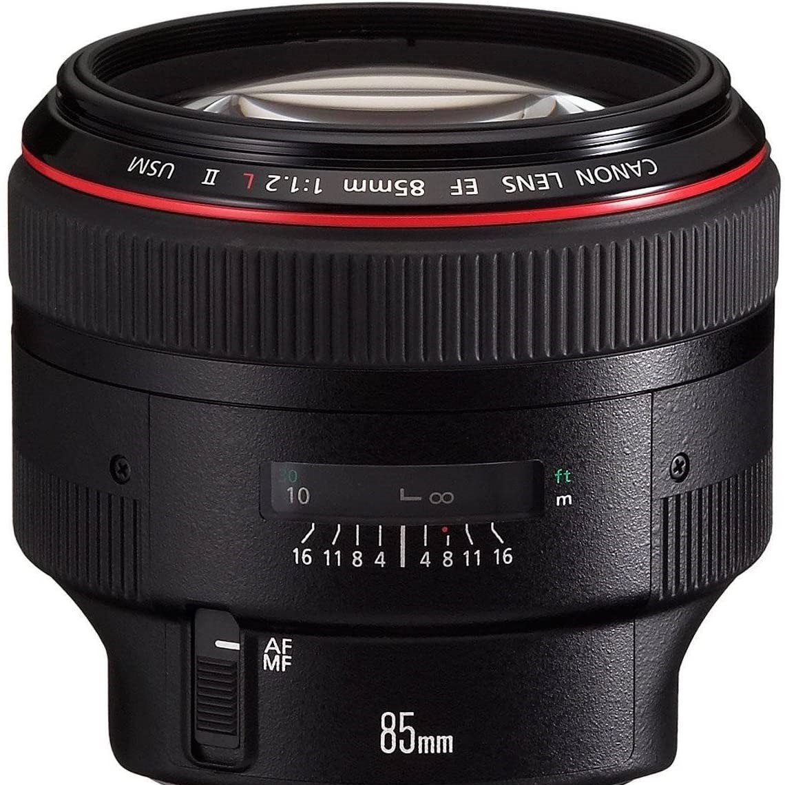
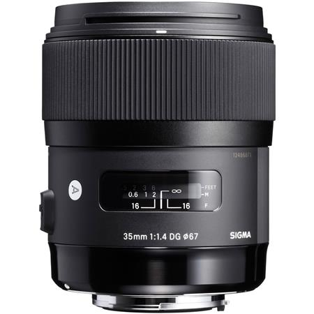
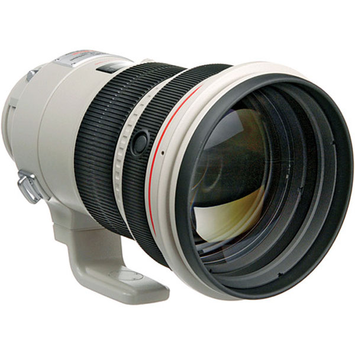
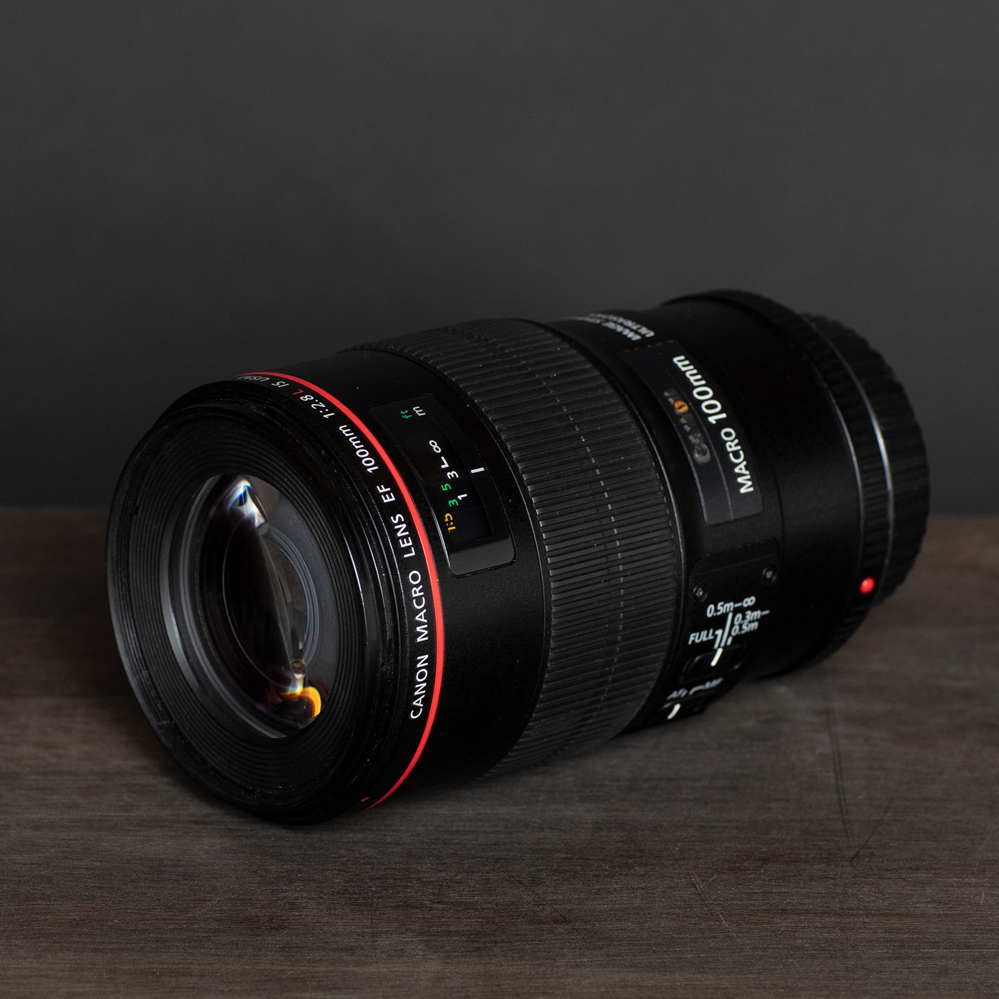
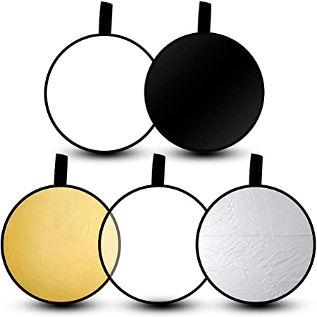

Canon 5d Mark III
I can't help it... I'm just not ready to move on to mirrorless, so me and my beast power on together. I've been through a few of these bodies but I keep buying them! I love them for the dual card slots, the peace of mind that comes with recording to two cards at once helps me sleep better every night!

Canon 85mm 1.2
This lens is my go to for 90% of outdoor photography- it's got just the right length for me to create that magic bokeh but close enough for subjects to hear me without me yelling! It's so sharp, it's definitely my favorite piece of glass!

Sigma 35mm 1.4 Art series
If I'm working with a newborn there's 99.99999% chance this is the lens I'm using during 80% of their session! This lens is just the right focal length to grab the whole setup while still making sure the littlest details are sharp. I want my clients to see their little princess snoozing in that carriage but also be able to count in eyelash in the same shot. The Sigma Art series is worth every penny!

Canon 200mm 2.0
The big boy. The mega lens. The legend. I swooned over this lens for entirely way too long. I finally gave in to temptation and added it to my collection. It's magic, like pure buttery magic. The bokeh is unparalleled; however, it weighs like 382 pounds so while I love it, I only use it once in awhile in quiet locations. It's a really long lens so you need to be pretty far from your subject and it gets hard to pose and prompt so far away. I really should use it more, it's truly dreamy, but I struggle with finding perfect opportunities to use this beast.

Canon 100mm 2.8 macro
This is the little engine that could. Once upon a time I bought a bag of lenses at a flea market for $75 and this lens was inside. It launched my whole career. It was worth $1000 and it was a seriously gorgeous piece of glass that I just kind of lucked into owning right when I was starting out. It desperately needs to be replaced with a newer version- the one I have is from the 90's!
